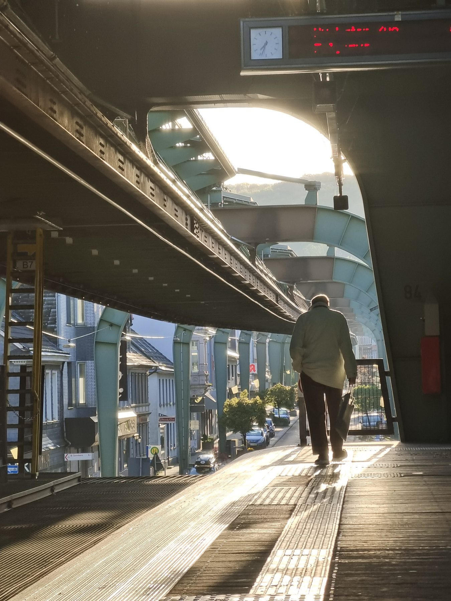
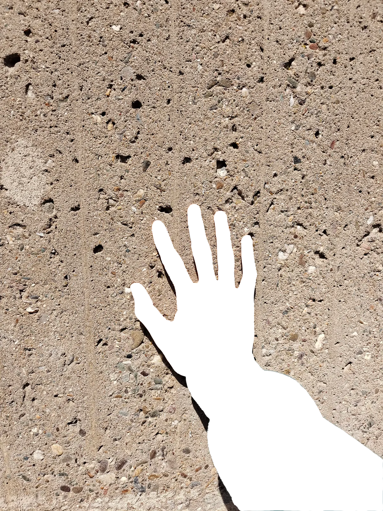
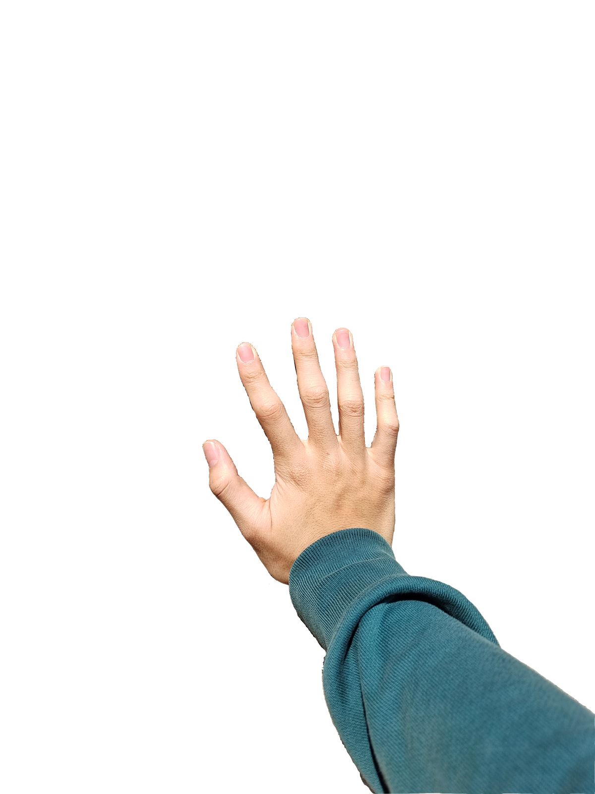

— Nr. 253 / Kaiserstraße
— Meine Geschichte / My Story
Ich war klein, als ich sie zum ersten Mal gesehen habe.
Es war ein Buch, oder ein Bild in einer Zeitschrift — ich weiß es nicht mehr genau. Aber da war eine Stadt, mit einer fliegenden Bahn. Eine Bahn, die nicht auf dem Boden fuhr, sondern schwebte.
Für ein Kind in China war es wie ein Traum. Eine Stadt, wo die Bahnen fliegen. Eine Stadt so klein und so speziell, dass sie nicht in meinem Geografie-Buch war — aber sie hatte diese unmögliche Sache, die keine andere Stadt hatte.
Mehr als zehn Jahre lang war Wuppertal kein Ort. Es war eine Idee. Ein Asyl — ein ruhiges Asyl in meinem Kopf, für wenn das Leben zu laut war. Etwas Schönes, Fernes, Friedliches, das ich nicht berühren konnte.
Dann, im April, habe ich sie berührt.